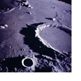
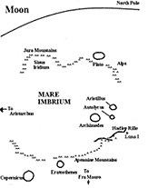

A Moon Base
Half of the novel, Ice Tomb, takes place on the moon. One of the main characters is charged with assisting his fellow astronauts and scientists to set up a moon base. This is not too far off in the future. In fact, George W. Bush recently issued a directive to NASA to return to the moon by the year 2015, coinciding with the year that the novel takes place.
Over the past two years I traveled to Kennedy Space Center — unfortunately I couldn’t quite get to the moon — to gain some perspective of the massive Saturn V rocket.
Scientists and astronauts have considered reusing this technology, because it worked, and because it would reduce the cost of designing new technology to reach the moon and insert enormous payloads on the moon in order to establish a base.
Some of my concepts for a moon base came from The Artemis Project, a private enterprise on the moon. Others came from NASA. They were proponents of what I called the LunaCats—life sustaining enclosed rovers, something like encapsulated mobile homes with enormous tractor tires, connected to the main housing of the base. This would only be sufficient for the initial set-up, however. Eventually, to protect the future inhabitants from radiation and micrometeorites, a large dome would have to be constructed on the lunar surface. The alternative would be to utilize the rilles—canyons that were carved out by lava. It is suspected that there are lava tubes—areas of the canyons that are covered with a lava roof—which could be adapted to contain a settlement. On the map below I’ve shown where the Apollo 15 mission was conducted, and an area in the Hadley Rille that could possibly be a lava tube.
Other activities in the book are also necessary
in establishing a base: Searching for ice in the poles, probably
using robotic
rovers.
You
can find information about this on the NASA website. Converting
moon soil and rocks to oxygen to sustain life and produce rocket
fuel.
Look up Lunar Mining.
And one activity is essential to preserving life on earth: CAPS.
The Comet Asteroid Protection System will eventually be deployed on the moon. It will consist of a series of telescopes on the dark side of the moon set up to scan the skies for roving asteroids and comets that could endanger this planet.